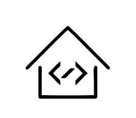

<mat-toolbar class="mat-elevation-z4">
    
      <ng-content></ng-content>

        
        <span class="titulo" [routerLink]="['/']"></span>
  <button mat-icon-button [matMenuTriggerFor]="appMenu">
    <mat-menu #appMenu="matMenu">
      <button mat-menu-item class="mat-menu-item" [routerLink]="['/login']" *ngIf="!user.isAutenticate()"><mat-icon aria-label="salvar icon" color="green">lock_open</mat-icon> Entrar</button>
      <button mat-menu-item class="mat-menu-item" [routerLink]="['/registro']" *ngIf="!user.isAutenticate()"><mat-icon aria-label="salvar icon" color="green">how_to_reg</mat-icon> Registrar</button>
      <button mat-menu-item class="mat-menu-item" *ngIf="user.isAutenticate()" (click)="user.logoff()"><mat-icon aria-label="salvar icon" color="green">lock_open</mat-icon> Sair</button>
      <button mat-menu-item class="mat-menu-item" [routerLink]="['/ajuda']"><mat-icon aria-label="sair icon" color="green">help</mat-icon> Ajuda</button>
      <button mat-menu-item class="mat-menu-item"><mat-icon aria-label="sair icon" color="green">invert_colors</mat-icon> <mat-slide-toggle [formControl]="toggleControl"></mat-slide-toggle> </button>
    </mat-menu>
    <mat-icon aria-label="Example icon-button with a heart icon">more_vert</mat-icon>
  </button>
</mat-toolbar>
